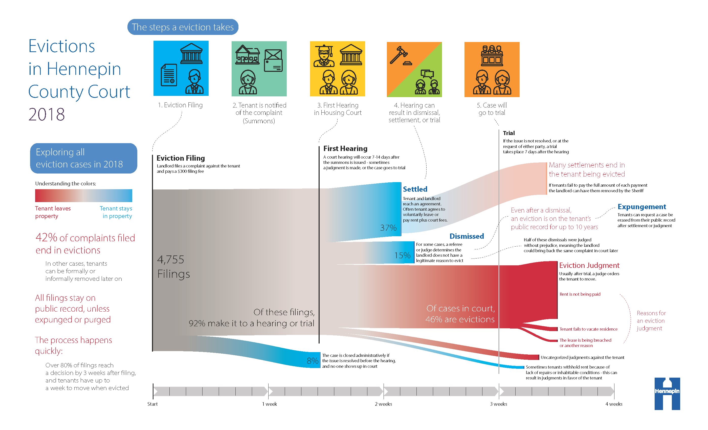

As COVID-19 was developing into a full-scale pandemic, many states’ governors issued executive orders banning landlords from evicting tenants, and the CDC ordered a nationwide eviction moratorium in September. In Minnesota, Gov. Walz issued this order on March 23, 2020, to be in effect throughout the duration of the peacetime state of emergency.
The moratoriums are intended to protect vulnerable people put out of work by the pandemic and help curb the spread of the coronavirus. While it is hard to argue the importance of these measures, the eviction ban has also put a pinch on “mom and pop” landlords who depend on collecting rent to meet mortgage payments, and who are no longer allowed to evict tenants who do not pay. In September, an injunction was filed with U.S. District Judge Nancy Brasel to overturn the moratorium, and some corporate landlords able to afford more legal clout have been aggressively trying to evict certain tenants.
Not all eviction filings end in the removal of the tenant. The graphic below displays the result of all eviction filings that occurred in Hennepin County in 2018:
According to research by Eviction Lab, Minnesota’s state-level eviction protections are some of the strongest in the nation. Despite that, under the letter of the law, the following exceptions can still be used to justify evicting a tenant:
Under the executive order, the number of evictions recorded in Minnesota dropped from around 7,500 in 2019 to around 1,500 in 2020. Use the map below and the associated census data to explore and compare racial and socioeconomic distributions:
Hover over a census tract:
To quote Matthew Desmond, founder of Eviction Lab and professor of Sociology at Princeton, “eviction [is] incredibly prevalent in low-income communities and [has] functioned as a cause, not just a condition, of poverty.” Here, an examination of the data reveals one census tract as a clear outlier: 124 evictions in 2019, nearly double the next highest count, and again with significantly more evictions in 2020 than anywhere else in the state. Perhaps unsurprisingly, the census tract is majority-Black and impoverished, and while a deeper examination of the ties between eviction, poverty, and racism is beyond the scope of this project, it is worth noting that the widely publicized recent killing of Daunte Wright occurred just blocks away from this census tract.
Despite the eviction ban, tenants are not relieved of their obligation to pay back rent owed. As of March 2021, an estimated 100,000 households behind on rent payments owe a combined $200 million. Now, with an end to Minnesota’s eviction moratorium beginning to come into view, tenants months behind on payments are fearing impending homelessness while legislators debate a way forward. While hundreds of millions in federal aid money is on the way, whether it will be enough to stem wide-scale homelessness in the medium to long term remains to be seen.
Created by Galen Kanazawa, University of Wisconsin-Madison, Spring 2021